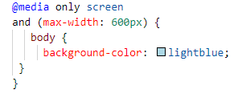
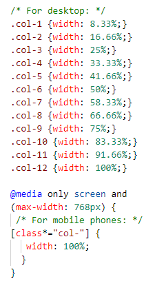
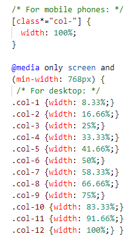
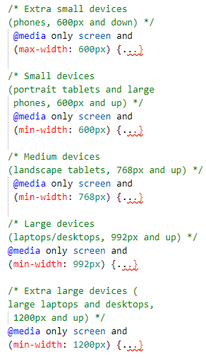
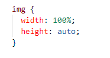

April 24, 2021 / By Izuagbe Samuel
Viewing websites with various devices (computer, tablets, smartphones) you have to make sure the website look good and responsive in every device. I have compiled a lot of useful responsive webpage design techniques, best test to provide comfort, and beauty to your webpage and making it responsive.
Firstly, lets talk about ways on how to use Media Query to make our website responsive on all devices
This brings up the question, what exactly is Media Query. Media Query is a CSS technique introduced in CSS3. it uses the @media rule to include a block of CSS properties only if a certain condition is true.
Example:
If a browser window is 600px or smaller, the background color will be red.
Media Queries can help when using rows and columns elements on our web, but that a topic for another day. We can add a breakpoint where certain parts of the design will behave differently on each side of the breakpoint.
Example:
When the screen (browser window) gets smaller than 768px, each column should have a width of 100%:
All desktop has 12 column, those columns are used to make our website responsive.
Mobile First means designing for mobile before designing for desktop or any other device (This will make the page display faster on smaller devices).This means that we must make some changes in our CSS.
Instead of changing styles when the width gets smaller than 768px, we should change the design when the width gets larger than 768px. This will make our design Mobile First:
There are tons of screens and devices with different heights and widths, so it is hard to create an exact breakpoint for each device. To keep things simple you could target five groups:
Example:
Using The width Property
If the width property is set to a percentage and the height property is set to "auto", the image will be responsive and scale up and down:
Example:
Step 1) Add HTML:
Step 2) Add CSS:
step 3) Add Media Queries:
Step 3) Javascript: